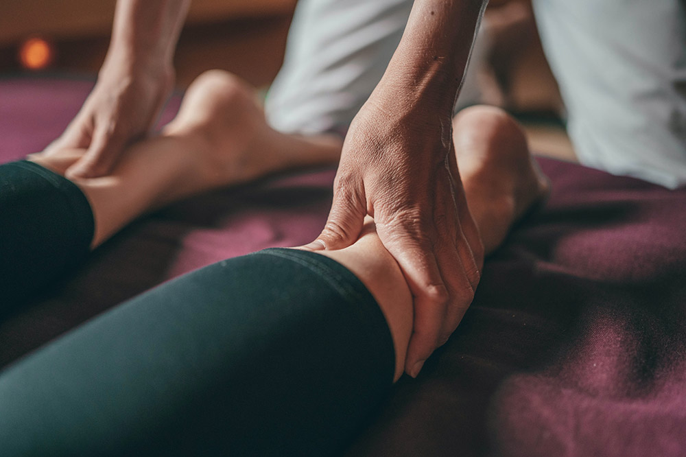

Claire Giguelay
"L'art du toucher bienveillant"

Qu'est ce que le Shiatsu ?
C’est un soin japonais qui consiste à pratiquer des pressions principalement avec les pouces sur des zones, des points spécifiques du corps et le long des méridiens d’acupuncture.Associé à quelques étirements et mobilisations douces, il permet une meilleure circulation de l’énergie vitale, le “Ki”.
Il est décrit par les japonais comme une “avant médecine” car il s’inscrit dans la prévention des maladies et le bon entretien de la santé.
Ses bienfaits
- Dénoue les tensions, facilite la respiration, améliore la qualité du sommeil
- Draine, améliore le confort circulatoire, digestif et articulaire.
- Agit sur les défauts mineurs de posture et de souplesse.
- Utilisé pour la préparation et la récupération sportive.
- Procure une profonde détente physique et psychique.
- Soulage les douleurs et défatigue.
Déroulement d'une séance
Le shiatsu traditionnel se pratique sur un futon posé sur des tatamis au sol. La séance individuelle est d’environ 1 h 15. Elle débute par un entretien. Installé confortablement, j’effectue des pressions rythmées sur l’ensemble du corps (habillé de vêtements souples et légers).La somme de toutes les pressions exercées au cours d’une ou plusieurs séances provoque une réaction tonifiante et stimule le mécanisme d’auto guérison. Il agit sur l’ensemble de l’individu, en profondeur et dans toute sa globalité.
Après une séance, pour profiter des bienfaits, s’hydrater et rester au calme de préférence.
Objectif bien-être
Recevoir des Shiatsu permet une meilleure intégration du schéma corporel et nourrit la confiance en soi.
Il accroit l’attention que l’on porte à soi, aux autres et à son environnement.
Il développe l’intuition, améliore le jugement et la concentration.
Le shiatsu convient à tous les âges de la vie.

Cabinet de Shiatsu Traditionnel
7, allée des Chênes87220 FEYTIAT
Je peux également intervenir dans votre espace professionnel
Contactez-moi